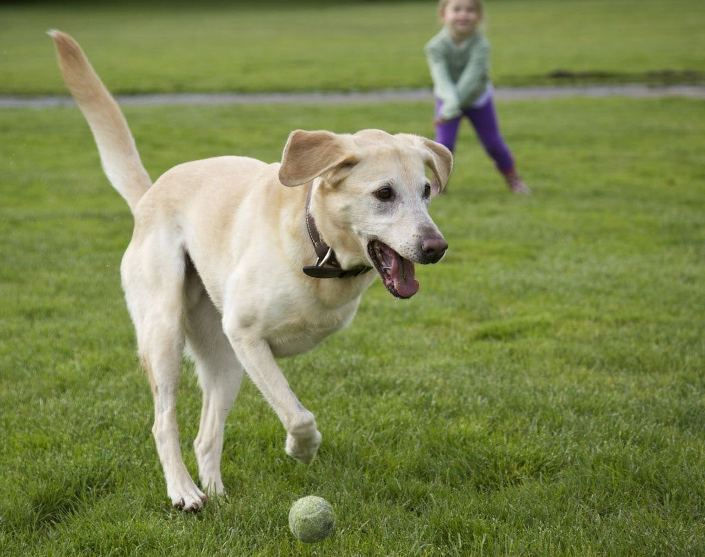

Paw Prosthetics Is your go to place for Animal Ortho Device needs, be it a prosthetic limb, a brace, or just advice Paw Prosthetics is here to help you start improving animal lives today.
Our aim is to make Ortho devices accessible to even more people through modern crowd sourcing and our community of creators. Pet Prosthetics is aims to be a place where both Pet Owners and Makers can work together to improve the lives of pets.

Pet Owner Experience
Through the Pet Owner side of Paw Prosthetics, Pet Owners are able to learn if the prosthetic or orthotic route might be right for their pet. Pet Owners who decide to move forward can see if they're in range of pre-existing professional businesses or if their needs are simple enough Pet Owners can work with Makers skilled in 3D modeling and printing to create a model.
With our reqest post system, anyone with a pet in need can create a request and attempt to find a maker to work with locally or remotely. With filters to help Pet Owners find the experience they need and with the freedom to discuss budgets and more, Paw Prosthetics works to ensure that even if you are unable to get Professional Businesses to help your Pet you can still help improve the life of your pet.
The Maker Experience
Through the Maker orientated side of Paw Prosthetics, Makers are able to browse Pet Owner requests for work in their area, make use of Maker Community Hub features and share/download Prosthetic and Orthotic device models to help fellow Makers and Pet Owners alike. Makers have the ability to browse for requests that speak to their skill sets and with our built in chat system, communication with clients has never been easier!
Make a Change
Paw Prosthetics goal is to help both Makers and Pet Owners make a change in the world. As Makers our users are able to not only get experience and profit from their work but also help to improve the lives of Pets in need whose Owners can't use the services of established businesses. Makers can help to ensure no Pet has to go without these life changing devices.
Commitment to Safety and Fairness
With Orthotic/Prosthetic and Kinesiology certification taking 2-4 years in Canada, Paw Prosthetics is dedicated to ensuring Makers and Pet Owners are able to interact and create not only safely but responsibly. Not only providing a wealth of information for Pet Owners to decide if the option is right for them but ensuring Makers know their limits and consider the challenges of undertaking more complicated work. While something like a Wheelchair type prosthetic is relatively simple and could be created by a Maker, more complicated pieces like limb replacements may be best left to the professionals for those able to seek their assistance.
With Orthotic/Prosthetic and Kinesiology certification taking 2-4 years in Canada, Paw Prosthetics is dedicated to ensuring Makers and Pet Owners are able to interact and create not only safely but responsibly. Not only providing a wealth of information for Pet Owners to decide if the option is right for them but ensuring Makers know their limits and consider the challenges of undertaking more complicated work. While something like a Wheelchair type prosthetic is relatively simple and could be created by a Maker, more complicated pieces like limb replacements may be best left to the professionals for those able to seek their assistance.
The Paw Prosthetic Mission
Our aim is to make Ortho devices accessible to even more people through modern crowd sourcing and our community of creators. Pet Prosthetics is aims to be a place where both Pet Owners and Creators can work together to improve the lives of pets everywhere.
With a dedicated system and design for both Pet Owners and Makers, no matter your skill level or knowledge, Paw Prosthetic aims to provide for the specific needs of each user. With Pet Orthotic and Prosthetic devices being limited in availability due to region, growing costs and other factors limiting the spread of professional Prosthetic and Orthotic businesses servicing Pet Owners, Paw Prosthetic aims to provide an option for Pet Owners regardless of location and wealth.